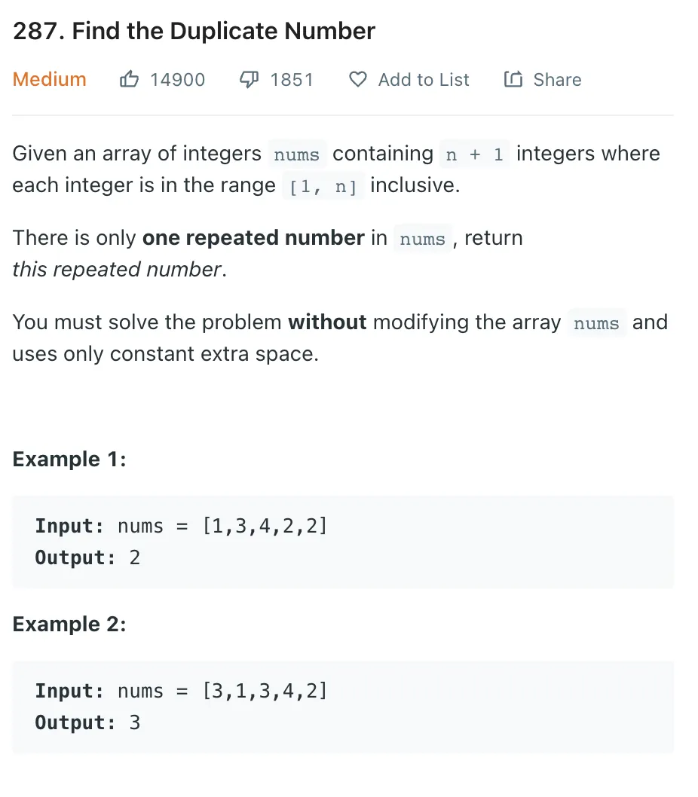
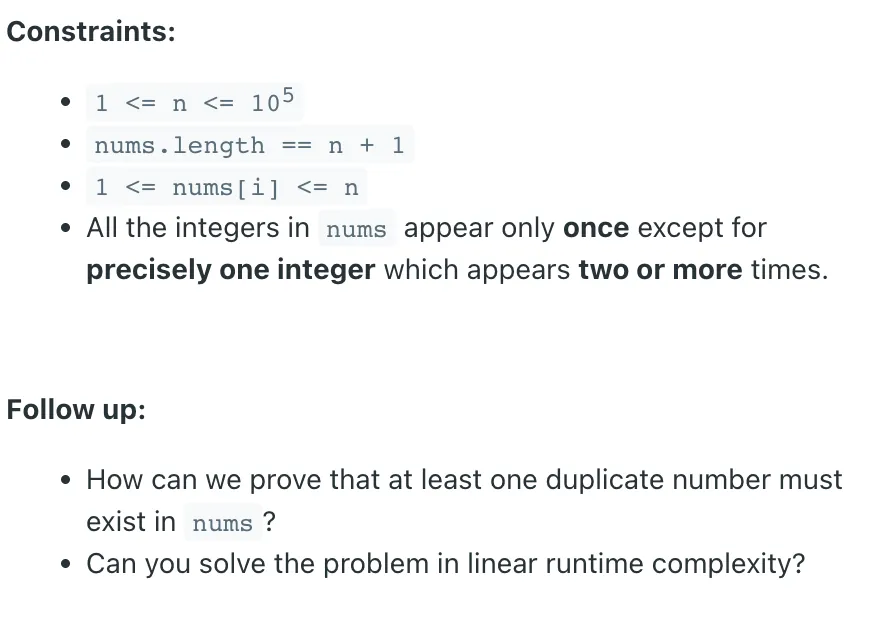

287. Find the Duplicate Number
Question


✍🏽 My Solution
Runtime: 24 ms, faster than 36.41% of Java online submissions for Find the Duplicate Number. Memory Usage: 59.3 MB, less than 97.97% of Java online submissions for Find the Duplicate Number.
class Solution {
public int findDuplicate(int[] nums) {
HashSet<Integer> set = new HashSet<>();
for (int n : nums) {
if (!set.add(n)) return n;
set.add(n);
}
return -1;
}
}
func findDuplicate(nums []int) int {
m := make(map[int]int)
for k, v := range nums {
if _, ok := m[v]; ok {
return v
}
m[v] = k
}
return -1
}
func findDuplicate(nums []int) int {
sort.Ints(nums)
for i := 1; i < len(nums); i++ {
if nums[i] == nums[i-1] {
return nums[i]
}
}
return -1
}
🧠 Thought Process
- Why did I choose this particular implementation?
- 可以用排序、Set，但違反題目需要原地的空間複雜度
Solution #1 [二分查找]
Runtime: 27 ms, faster than 36.56% of Java online submissions for Find the Duplicate Number. Memory Usage: 76.2 MB, less than 31.06% of Java online submissions for Find the Duplicate Number.
class Solution {
public int findDuplicate(int[] nums) {
int n = nums.length - 1;
int low = 1;
int high = n;
while (low <= high) {
int mid = low + (high-low) / 2;
int count = 0;
for (int i = 0; i < nums.length; i++) {
if (nums[i] <= mid) {
count++;
}
}
if (count > mid) {
high = mid - 1;
} else {
low = mid + 1;
}
}
return low;
}
}
Explanation (in my words)
-
How does their solution work?
- 用時間換空間，比較少數會用這種方法，實務上都是空間換時間
-
我们知道二分查找要求有序，但是给定的数组不是有序的，那么怎么用二分查找呢？
原数组不是有序，但是我们知道重复的那个数字肯定是
1到n中的某一个，而1,2...,n就是一个有序序列。因此我们可以对1,2...,n进行二分查找。mid = (1 + n) / 2，接下来判断最终答案是在[1, mid]中还是在[mid + 1, n]中。我们只需要统计原数组中小于等于
mid的个数，记为count。如果
count > mid，鸽巢原理，在[1,mid]范围内的数字个数超过了mid，所以一定有一个重复数字。否则的话，既然不在
[1,mid]，那么最终答案一定在[mid + 1, n]中。
-
What is the space/time complexity of their solution?
- time: O(nlogn) logn為二分查找 n為二分查找內多做了for循環
- space: O(1)
Solution #2 [快慢指針]
太tricky
Explanation (in my words)
- How does their solution work?
- 使用环形链表II的方法解题（142.环形链表II），使用 142 题的思想来解决此题的关键是要理解如何将输入的数组看作为链表。
-
1.数组中有一个重复的整数 <==> 链表中存在环
2.找到数组中的重复整数 <==> 找到链表的环入口